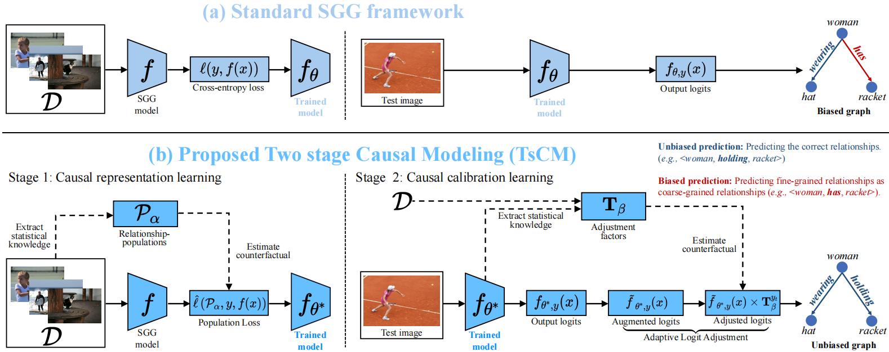

Publications
* co-first author
Object-level Correlation for Few-Shot Segmentation
Chunlin Wen, Yu Zhang, Jie Fan, Hongyuan Zhu, Xiu-Shen Wei, Yijun Wang, Zhiqiang Kou, Shuzhou Sun
IEEE/CVF International Conference on Computer Vision (ICCV), 2025
A Reverse Causal Framework to Mitigate Spurious Correlations for Debiasing Scene Graph Generation
Shuzhou Sun, Li Liu, Tianpeng Liu, Shuaifeng Zhi, Ming-Ming Cheng, Janne Heikkilä, and Yongxiang Liu
IEEE Transactions on Pattern Analysis and Machine Intelligence (TPAMI), 2025
A Causal Adjustment Module for Debiasing Scene Graph Generation
Li Liu, Shuzhou Sun, Shuaifeng Zhi, Fan Shi, Zhen Liu, Janne Heikkilä, and Yongxiang Liu
IEEE Transactions on Pattern Analysis and Machine Intelligence (TPAMI), 2025

Unbiased Scene Graph Generation via Two-stage Causal Modeling
Shuzhou Sun, Shuaifeng Zhi, Janne Heikkilä, Qing Liao, and Li Liu
IEEE Transactions on Pattern Analysis and Machine Intelligence (TPAMI), 2023

Evidential Uncertainty and Diversity Guided Active Learning for Scene Graph Generation
Shuzhou Sun, Shuaifeng Zhi, Janne Heikkilä, and Li Liu
International Conference on Learning Representations (ICLR), 2023
FastAL: Fast Evaluation Module for Efficient Dynamic Deep Active Learning using Broad Learning System
Shuzhou Sun, Huali Xu, Yan Li, Ping Li, Bin Sheng, and Xiao Lin
IEEE Transactions on Circuits and Systems for Video Technology (TCSVT), 2023
Unsupervised Fusion Feature Matching for Data Bias in Uncertainty Active Learning
Wei Huang*, Shuzhou Sun*, Xiao Lin, Ping Li, Lei Zhu, Jihong Wang, C. L. Philip Chen, and Bin Sheng
IEEE Transactions on Neural Networks and Learning Systems (TNNLS), 2022

EAPT: Efficient Attention Pyramid Transformer for Image Processing
Xiao Lin*, Shuzhou Sun*, Wei Huang, Bin Sheng, Ping Li, and David Dagan Feng
IEEE Transactions on Multimedia (TMM), 2021